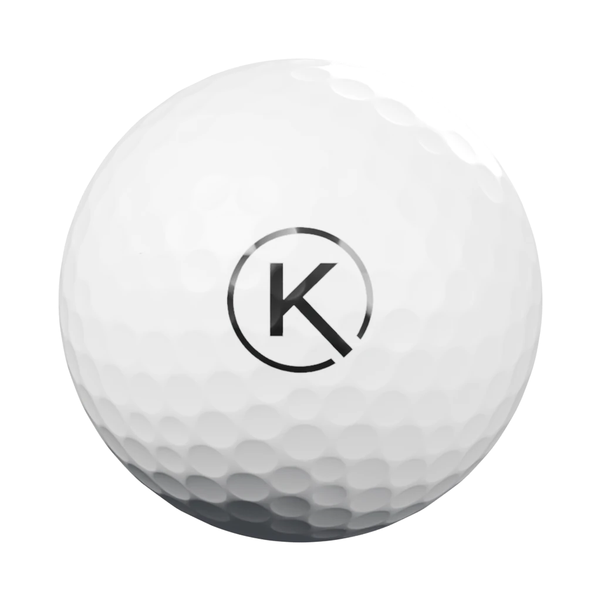
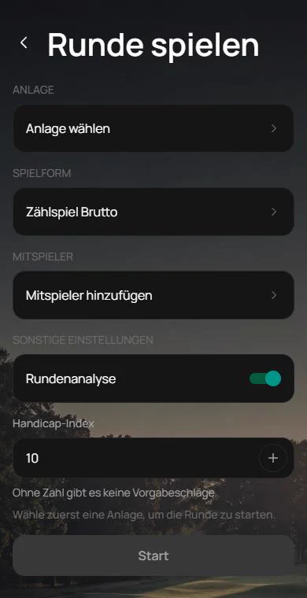
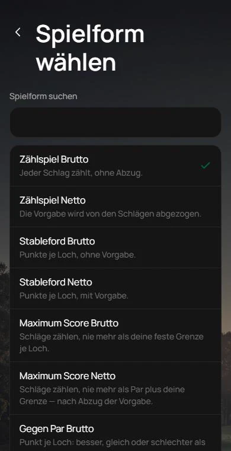
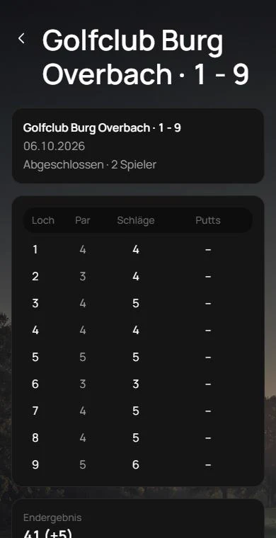
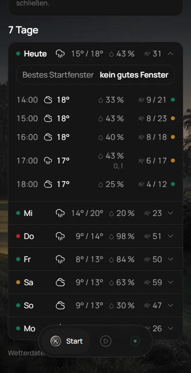
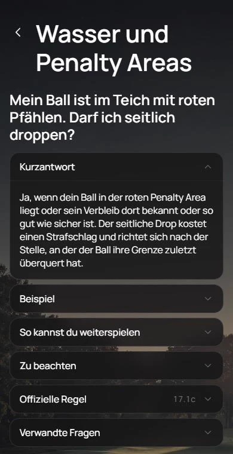

Die Golf-App · in Entwicklung
DeinGolflebenbekommteinenOrt.
Deine Runde. Loch für Loch.
Anlage wählen, Spielform festlegen, Schläge eintragen. Auch ohne Netz.
Wetter, das Golf versteht.
Gut spielbar oder nicht. Und bis wann du heute noch starten kannst.
Regelhilfe
Die Regel. Direkt am Platzplan.
Tippe, wo dein Ball liegt. Die Antwort kommt in Klartext.







Jetzt registrieren und mitspielen